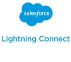

Cadalys Data Archive™
Deploy to HerokuCadalys Data Archive™ application is built on Salesforce and Heroku platforms, leveraging the Heroku Connect solution to achieve bi-directional synchronization, and Lightning Connect to access the archived data in the Salesforce.
Below is the complete architecture diagram of the Cadalys Data Archive™ application.
Salesforce
Cadalys Data Archive™ is a data archiving application aiming to archive older unused data out of Salesforce.
With the use of Lightning UI, implemented on the Salesforce side, Administrators can set customizable archiving rules for standard and custom objects, specify the child objects that are automatically archived with their parents.
A Salesforce widget enables users to search archived data from within Salesforce and see the results on the Lightning pages.
Web Services provide an interface from Salesforce to request all the actions on the Heroku side, needed for archive and unarchive operations. There is also a web service, calling standard Heroku Connect services for Table Mapping maintenance.
Heroku Connect
Cadalys Data Archive™ uses Heroku Connect to support bi-directional synchronization between Salesforce and Heroku Postgres to synchronize all the objects, required to be archived.
Heroku
Additional Java services are implemented on the Heroku side. Archive Java services are responsible for creation of the archiving tables and custom triggers. Search Java services provide the Search results within the archived tables using the PostgreSQL full text search engine.
 Salesforce Lightning Connect
Cadalys Data Archive™ uses Lightning Connect to display the archived data in the Salesforce UI. Archived objects are represented as Heroku External objects. Lightning Connect provide Salesforce Administrators with possibility to configure the archived objects layouts and related lists in the same way they do that for standard Salesforce objects.